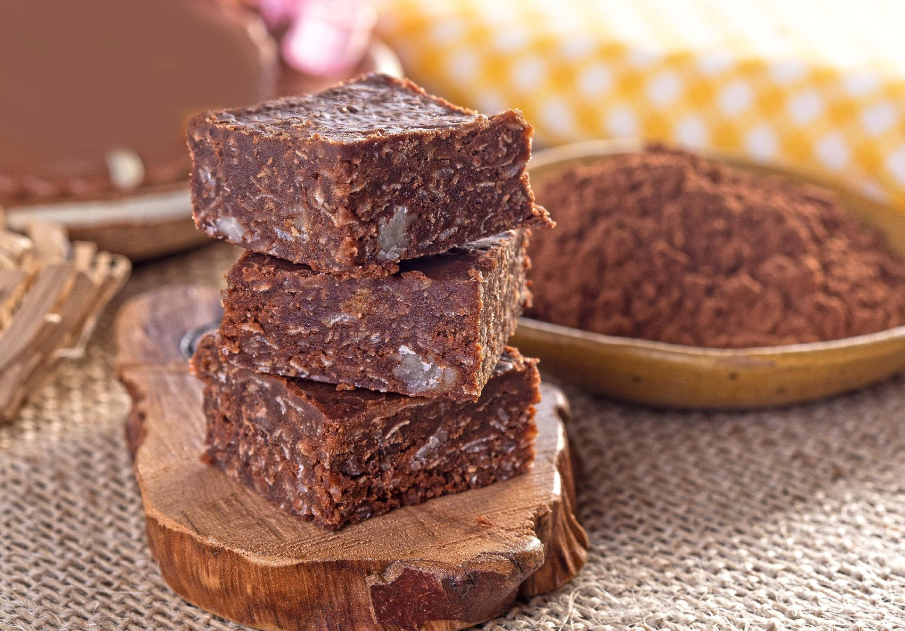

Cocada de Cacau

Imagem ilustrativa de uma Cocada de Cacau
Ingredientes Necessários (40 porções)
200g de chocolate e meio amargo picado
4 colheres de açúcar mascavo
margarina para untar
margarina para untar a forma
2 xícaras de açúcar
1 colher de sopa de fermento
1/2 xícara de óleo
farinha de trigo para untar a forma
Modo de Preparo do bolo
Duração estimada: 3 horas
Derreta o chocolate em banho-maria e misture com o leite de coco e o açúcar mascavo, mexendo até ficar cremoso.
Leve a mistura ao fogo baixo com o coco ralado ate desgrudar do fundo da panela.
Modele as cocadas com duas colheres de chá de massa.
Coloque em uma forma untada e leve à geladeira por 30 minutos.